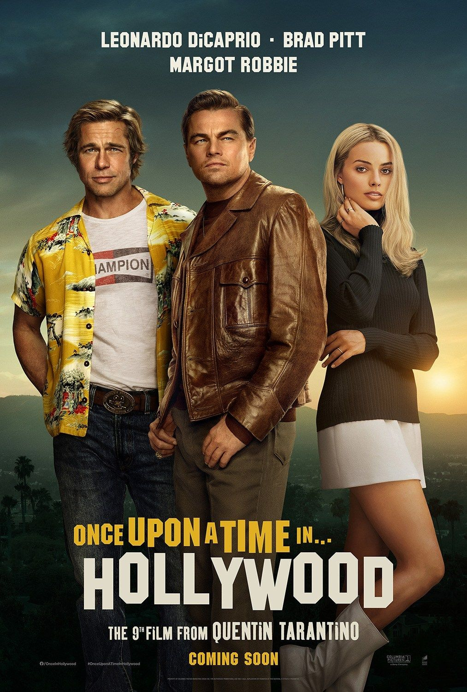
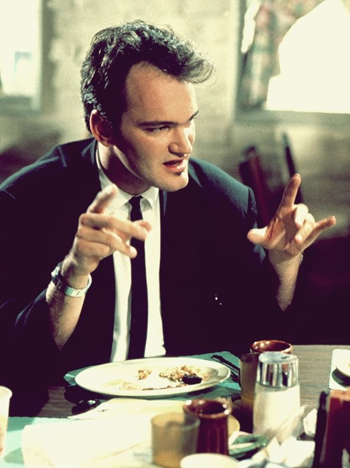

Films
«Скажені пси» (англ. Reservoir Dogs) — перший фільм режисера Квентіна Тарантіно, психологічна драма з кримінальним сюжетом. Квентін Тарантіно цим фільмом започаткував свій фірмовий стиль: яскраві діалоги, нелінійний розвиток сюжету, спритні стрибки назад і вперед у часі, щоб виявляти нові деталі або грані героїв.
«Скажені пси» стали культовим кіно. Журнал Empire назвав їх «Найвидатнішим незалежним фільмом усіх часів». На 18 вересня 2018 року фільм займав 76-у позицію у списку "250 кращих фільмів за версією IMDb.
Український переклад зробила студія Цікава ідея на замовлення Hurtom.com.Рідко коли трапляється так, що найперша робота отримує одну із найвищих оцінок критиків. Це водночас величезна перевага та величезне випробування, адже все життя опісля проходить у гонитві за успіхом. Чи впорався з цим Тарантіно — він і справді старається, вдосконалюючи свою манеру зйомки та сценарну майстерність. Вражаюче злагоджений акторський склад, манера оповіді та бійки з морем крові й атмосферою переслідування. Тарантіно водив всіх за носа, розповідаючи казки про те, що “reservoir dogs” — це жаргонізм, чи що він мав на увазі французьке “до побачення”, і досі не є зрозумілим, на чому ж варто зупинитися нам, допитливим глядачам. Тарантіно вклав у фільм дуже багато енергії, що неможливо не помітити у тому, як він вибудовує спілкування між героями, які носять “кольорові” прізвиська, і в тому, що він дає змогу врятуватись одному із героїв, хоча і не втрачає реалізму всієї обстановки, адже решта героїв помирають.
«Криміна́льне чти́во» (англ. Pulp Fiction) — культовий художній фільм 1994 року виробництва США, одна з найвідоміших робіт режисера Квентіна Тарантіно. Фільм постійно перебуває в першій десятці списку найкращих 250-х фільмів на сайті IMDb. Картина вважається важливою віхою в історії кінематографа, що дала відчутний імпульс розвитку незалежного американського кіно.
У фільмі знялося ціле сузір'я акторів — зірок сучасного кіно: Ума Турман, Брюс Вілліс, Джон Траволта, Семюел Лірой Джексон, Тім Рот, а також у камео сам Квентін Тарантіно.Нелінійний сюжет, велика кількість наркотиків, прекрасні ступні Уми Турман, твіст у кафешці під рок-н-рол, реанімація за допомогою шприца (до речі насправді шприц діставали із грудей Уми, а вже потім при монтажі цю сцену “розвернули” задом наперед), психопатія, Тарантіно у другорядній, але помітній ролі, розгублений Траволта, і чимало референсів на фільми про ковбоїв. І все це під назвою, яка означає літературу, яка за якістю виконання подібна до туалетного паперу.
Впевнений, що більшість із вас розуміють Тарантіно як шибайголову, який вміє ставити бійки, вести довгі діалоги та різко змінювати сюжет. У “Кримінальному чтиві” він розповідає про буденне життя американських бандитів, із усіма його плюсами та мінусами, але ставить його так, що ти починаєш чітко розуміти: ярлики, які ми навішуємо — це далеко не завжди наша об’єктивна оцінка особистості. Серед сотень епічних фразочок, якими сповнений цей фільм, варто роздивитися цю легкість та природність емоцій героїв, яких ми сприймаємо спочатку виключно як негативних.
Джекі Браун (англ. Jackie Brown) — художній фільм виробництва США, знято за мотивами романа Елмора Леонарда.Фільм побудований на основі роману “Ромовий пунш” Елмора Леонарда, кілька разів був номінований, і навіть отримав “Срібного ведмедя” за найліпшу чоловічу роль.
При перегляді ви неодмінно задумаєтесь над тим, чому все-таки Тарантіно обрав цей роман для екранізації. Відповідь слід шукати в подробицях самого роману: головна героїня, Джекі, працює стюардесою та допомагає контрабандистам провозити готівку для торгівлі зброєю, алкоголем, тютюном та вибухівкою, а потім краде частину грошей, спокушена розмовами із агентами, які намагаються змусити її видати контрабандистів. Просто-таки вибухове к-к-к-комбо, якраз у стилі Тарантіно! Хоча ти відчуваєш, що режисер намагався бути серйозним, тонко помічаєш психологію усіх діалогів між людьми, пов’язаними бізнесом, з якого не так і просто вийти, а також є літри крові, вбивства, обмани та крадіжки.
Попри весь цей екшн, ти дещо нудишся, тому що з часом ти перестаєш вірити героям і десь усередині прокидається скепсис. Семюел Л. Джексон, на жаль, таки не може одним своїм поглядом та сарказмом витягнути увесь фільм. Як не намагайся встигнути проаналізувати попередні повороти сюжету, все одно загубишся у тому, що відбувається в “Джекі Браун”. Фільм і справді серйозний, але підходить далеко не кожному глядачеві.
«Убити Білла» (англ. Kill Bill Volume 1) — американський бойовик 2003 року режисера Квентіна Тарантіно. Фільм є першою з двох частин-томів.
Спочатку планувалося показати у кінотеатрах обидві частини одночасно, але з огляду на те, що фільм мав довжину більше чотирьох годин, було вирішено його розділити в прокаті на два томи, які було показано в кінотеатрах з різницею у кілька місяців: «Убити Білла. Фільм 1» вийшов в прокат наприкінці 2003 року, а «Убити Білла. Фільм 2» — на початку 2004 року. Обидва фільми часто згадують під спільною назвою «Убити Білла».
Нелінійний сюжет показує головну героїню, спочатку названу Беатрікс Кіддо, Нареченою, колишнього члена угрупування найманих вбивць, яка прагне помститися колишнім колегам та їх ватажкові Біллу за криваве вбивство усіх присутніх на її весіллі та спробу вбивства її самої.
Фільм відрізняється численними посиланнями до багатьох жанрів світового кіно — італійських спагетті-вестернів[1], китайського[2] та японського[3] кінематографів, американських фільмів жахів та аніме.
На 18 вересня 2018 року фільм займав 169-у позицію у списку "250 кращих фільмів за версією IMDb.
«Уби́ти Бі́лла. Фільм 2» — американський бойовик 2004 року, режисером та автором сценарію якого виступив Квентін Тарантіно. Спочатку було заплановано випустити обидві частини одночасно, але так як хронометраж стрічки перевищував чотири години, було випущено дві частини — перша з'явилася у кінотеатрах наприкінці 2003 року, прем'єра другої відбулася у квітні 2004 року.
Важко повірити, що цей оригінальний диптих ще хтось із вас, любих читачів, іще не бачив. Якудза, надміцні катани від Хаторі Ханзо, помста за смерть батьків, діти-вбивці, лайфхаки по виживанню у домовині, вириванню очей та реабілітації після коми та персонаж “Нареченої”, який був вигаданий зумисне для Уми Турман — це вже такий ядерний постмодерністський смузі, що безумовно має підірвати мізки, як Чорнобиль і залишитися там у вигляді Цезію-137, який ще довго буде розпадатися, утворюючи післясмак. Ума Турман, як білий ангел, розмахує катаною справедливості, не стримуючи зневіри до життя, яке несподівано позбавило її будь-яких надій на щастя.
Тарантіно продумав цей фільм, здобрюючи його деталями, наче файна господиня борщ сметаною, тому “Курвовозик” (Pussy Wagon), пістолет в упаковці пластівців, аніме-вставки та бої на фоні снігу і внутрішнього дворику пагоди, левітування із столу та стіл та комічне шмагання тою ж таки катаною по сраці залишають відчуття справді ситної страви.
«Невбиваний» (англ. Death Proof) — кінофільм режисера Квентіна Тарантіно, що вийшов на екрани в 2007 році. Головний герой стрічки, каскадер Майк у виконанні Курта Рассела, з маніакальною завзятістю переслідує молодих жінок на своїй «смертестійкій» (англ. Death Proof) машині. Фільм витримано в естетиці кінострічок класу B 1970-х років. Спочатку картина замислювалася Квентіном Тарантіно як друга частина проекту «Грайндхаус» (першу частину «Планета страху» знімав Роберт Родрігес), однак після провалу «Грайндхаус» в американському прокаті режисер переробив «Невбиваниого» в самостійний повнометражний фільм. Світова прем'єра цієї версії відбулася 22 травня 2007 року в рамках Каннського кінофестивалю. У листопаді 2012 року в інтерв'ю журналу «Голлівуд репортер» Тарантіно назвав «Невбиваного» своїм найгіршим фільмом, але при цьому зазначив, що хоч фільм і знятий незграбно, він не так вже й поганий.
Фільм «Невбиваний» - двохактний трилер Квентіна Тарантіно, задуманий як продовження проекту «Грайндхаус».
Три подружки - Арлін «Батерфляй», Шанна і Джулія - відзначають в барі день народження Джулії. За балачками та коктейлями дівчата не помічають людини зі шрамом, який спостерігає за ними. Цей відвідувач, немолодий чоловік, який представився каскадером Майком, любить катати дівчат на тюнингованном старому Chevrolet, капот якого прикрашає намальований череп. Свою каскадерську машину він називає «смертестійкою», що забезпечує водієві виживання в будь-якій аварії.
На підпитку подружки не здогадуються, що Майк - маніяк-психопат, спільні поїздки з яким смертельно небезпечні. Повеселившись в барі, компанія прямує додому, а колишній трюкач, що поклав око на дівчат, переслідує їх.
Всупереч очікуванням, першою жертвою божевільного каскадера стає легковажна Пем, постійна клієнтка бару, яка випадково познайомилася з Майком. Пекельна чорна машина, куди необачно вмощується блондинка, везе її назустріч смерті.
«Безславні виродки» (англ. Inglourious Basterds (sic[2])) — фільм режисера Квентіна Тарантіно, що виступив також сценаристом картини. Зйомки фільму почалися восени 2008 року у Франції та Німеччині, прем'єра відбулася на Каннському кінофестивалі 2009 року. Події картини, в якій знялися Бред Пітт, Майк Майєрс, Елі Рот та Крістоф Вальц, відбувається у Франції під час Другої світової війни.
На 31 грудня 2018 року фільм займав 95-у позицію у списку 250 найкращих фільмів за версією IMDb.
У цього фільму вісім номінацій на Оскар, і лише один забраний у номінації “Найліпша чоловіча роль другого плану”. До речі, назва цього фільму англійською написана орфографічно невірно. Тарантіно зазначав, що слід писати назву саме як “Inglourious Basterds”, хоча правильно писати “Inglorious bastards”. Журналісти довго випитували Тарантіно і ледве не чатували біля його дверей із цим питанням на вустах, доки він не зірвався і не випалив на одній із прес-конференцій, що “виродки” звучить як “виротки”, тому ось так він і назвав свій фільм, поповнивши історію кіно стрічкою, до якої приказка “як казю, так і писю” відноситься у повній мірі. Але не слід ставитися до фільму упереджено: він розповідає небанальну історію спротиву американських євреїв у розпал діяльності німецького СС та трішки про тогочасне кіновиробництво пропагандистських фільмів.
«Джанґо вільний» (англ. Django Unchained) — американський фільм-вестерн, знятий 2012 року. Режисер та автор сценарію Квентін Тарантіно. У головних ролях — Джеймі Фокс, Леонардо ДіКапріо та Крістоф Вальц. Знімаючи фільм, Тарантіно перебував під впливом італійського спагеті-вестерну «Джанґо» (1966), з Франко Неро в головній ролі.
Фільм вийшов на екрани у США та Канаді 25 грудня 2012, в більшості решти країн 17—18 січня 2013. В Україні з 17 січня.
За касовими зборами і нагородами «Джанґо вільний» називають найуспішнішим фільмом у кар'єрі Тарантіно.Тарантіно прекрасний і тоді, коли він знімає фільми відходячи від свого традиційного стилю і вписуючи у дошку поруч із своїми шаблонними прийомами щось нове. Саме так сталось із фільмом “Джанґо вільний”, де Тарантіно вирішив нарешті задовольнити своє давнє бажання і відзняти спаґетті-вестерн самотужки. Правда, не був би це Тарантіно, якби у картині не було б расизму, феноменально жорстоких бійок та моря крові, яка ллється просто таки як зі шлангу, а шаблон безлічі глядачів рвало на шматки те, що негр афроамериканець грає головну роль у вестерні. Хоча він впорався більш ніж достойно та чудово змалював усі непрості сторінки боротьби зі стереотипами щодо кольору шкіри, зокрема і настрої Півдня перед початком Громадянської війни.Дуже дивує те, що з часом Тарантіно почав надавати особливої уваги вбранню, тому Джанґо постає перед нами у разючому салатовому сюртукові та синьому кафтані (натхненному картиною “Хлопчик у блакитному” Томаса Гейнсборо). У цьому фільмі є і Леонардо Ді Капріо, який на той момент ще намагався вибороти Оскар своєю грою, тож момент, коли ДіКапріо розбиває на столі склянку, був абсолютно незапланованим, і вся знімальна група просто завмерла від шоку, а Лео відіграв усю сцену навіть не поморщившись від болю. Брунгільда та її поневіряння, істинні переживання доктора Шульца та діалоги, сповнені роздумів над природою свободи та несправедливістю світу зачіпають. Тарантіно також вирішив навіть трішки потурати мемам, і тому його фільм закінчується епічним вибухом, на фоні котрого Джанґо крокує впевненою і вільною ходою.
«Мерзенна вісімка» (англ. The Hateful Eight; іноді стилізовано як The H8ful Eight) — американський фільм-вестерн режисера та сценариста Квентіна Тарантіно. У головних ролях — Семюел Лірой Джексон, Курт Расселл, Дженніфер Джейсон Лі, Волтон Гоггінс[en], Тім Рот, Дем'ян Бішир[en], Майкл Медсен та Брюс Дерн. Дія фільму розгортається у Вайомінгу через кілька років після Громадянської війни і обертається навколо восьми жителів Заходу, які шукають притулку в невеликій галантерейній крамниці, неподалік від зупинки диліжансу на гірському перевалі.
Розробка фільму була анонсована Тарантіно у листопаді 2013 року. Однак, після того, як сценарій був злитий у мережу в січні 2014 року, режисер вирішив скасувати проект і опублікувати сценарій як роман замість цього. Після того, як Тарантіно провів читку сценарію перед публікою у театрі United Artists в Лос-Анджелесі, режисер сказав, що він заспокоївся і все ж таки буде знімати «Мерзенну вісімку». Зйомки почалися 23 січня 2015 року у Теллурайді[en], штат Колорадо. Прем'єра фільму відбулася 25 грудня 2015 року в обмеженому прокаті США та Канади, а в Україні — 14 січня 2016 року.Величезна заслуга цього фільму і Тарантіно зокрема у тому, що в даному випадку він чітко знав, що обирати для свого конкретного сюжету. Цей фільм починається із просто шикарної першої години зйомок за всіма правилами композиції і колористики у зимових лісах штату Вайомінг, де везуть полонянку для того, аби її стратити. Опинившись посеред завірюхи, подорожнім доводиться пристати до будиночка пані Мінні, де компанія із конфедерата, янкі, шерифа, мексиканця, головоріза та ковбоя починає вести свої діалоги, і у кожного різна мета. Втім, всі мають чітко зрозуміти, хто говорить правду, а хто бреше: і ось це напруження, коли твої здогади провалюються за хвилини, приковує тебе до екрану, наче загіпнотизовану змією мишу. Якою ж неповторною є гра Дейзі-втікачки, яку поливають кров’ю та словесним брудом щосекунди, але вона все одно продовжує пускати свої жіночі бісики та виглядати сексуально,ще за мить психопатично, а вже за кілька секунд викликати співчуття.

Одного разу в Голлівуді(англ. Once Upon A Time In Hollywood) — драмедійний фільм 2019 року режисера Квентіна Тарантіно. Стрічка розповідає історію про телевізійного актора Ріка Долтона 1969 року в Лос-Анджелесі та його дублера Кліфф Бута, і як вони просуваються через мінливу кіноіндустрію. Фільм показаний на кінофестивалі в Каннах 21 травня 2019 року;прем'єра відбулася в США — 26 липня, в Україні — 15 серпня.
Для фільму не було написано жодного саундтреку, вся використана музика була написана до 69-го року
Події розгортаються у Лос-Анджелесі влітку 1969 року. Рік Далтон (Леонардо ДіКапріо) – телевізійний актор, що знаходиться на злеті популярності після нещодавніх зйомок. Він будь-що прагне закріпити свій успіх та зніматися далі. Не хоче пасти задніх і його товариш Кліфф Бут (Бред Пітт). Власне, Бут не актор, а лише дублер. Але справи це не міняє і він вірить у те, що побудує чудову кар’єру.
Комедійна драма «Одного разу... в Голлівуді» – це перша робота Квентіна Тарантіно відтоді, як він припинив співробітництво з Гарві Вайнштейном. Події фільму відбуваються на тлі резонансного вбивства, що сталося в Голлівуді в ніч на 9 серпня 1969 року, коли п’ятьох людей, серед яких відомі актори, було жорстоко вбито. Прем’єра стрічки відбудеться рівно через 50 років після тих подій. За словами Тарантіно, він присвятив роботі над цим проектом п’ять років. Зіграти у своїй стрічці він традиційно запросив акторів першої величини – Марго Роббі, Леонардо ДіКапріо та Бреда Пітта.
Director
Кве́нтін Джеро́м Таранті́но (англ. Quentin Jerome Tarantino; нар. 27 березня 1963) — американський режисер, сценарист, актор і продюсер. Став відомий на весь світ після фільму «Кримінальне чтиво» (1994), який приніс йому «Золоту пальмову гілку» Каннського кінофестивалю, а також премії «Оскар» і «Золотий глобус» за найкращий сценарій.
Народився поза шлюбом у шістнадцятирічної медсестри Конні Макг'ю (англ. Connie McHugh) від актора та музиканта Тоні Тарантіно[en]. Конні народилася в Ноксвіллі і має ірландські коріння та коріння індіанського племені черокі. Тоні — американець італійського походження, народився в Квінзі[1][2][3][4]. Мати Квентіна була обдарованою ученицею, закінчила школу в 15 років та вийшла заміж за Тоні лише для того, щоб стати незалежною жінкою. Але шлюб не вдався, вони розлучилися. Про те, що вона вагітна, Конні дізналася вже після розлучення, але ніколи не намагалася зв'язатися з колишнім чоловіком, і сам Квентін надалі не робив спроб знайти свого біологічного батька[5]. Конні спочатку хотіла дати дитині ім'я Квінт в честь Квінта Аспера, героя ковбойського серіалу «Димок зі ствола» у виконанні Берта Рейнольдса, але пізніше вирішила назвати його Квентін на честь героїні Квентіни роману «Галас і шаленство» Вільяма Фолкнера.
Коли Квентіну виповнилося два роки, вони з матір'ю переїхали на південь Лос-Анджелеса, в Торранс, а пізніше в сусідній Харбор-Сіті[en]. У Лос-Анджелесі і пройшло його дитинство, він пішов у молодшу середню школу Fleming в Ломіті і брав уроки драми[5]. Мати вдруге вийшла заміж за місцевого музиканта Курта Заступіла. Курт усиновив Квентіна, коли тому було два з половиною роки, і дав йому своє прізвище. Власне, лише закінчивши школу та вирішивши стати актором, Квентін повернувся до більш придатної для сцени прізвища свого біологічного батька — Тарантіно. У міру того як Конні робила вдалу кар'єру в галузі фармакології, сімейство побудувало власний будинок. Конні працювала весь день, а Курт ночами, тому Квентін проводив багато часу з батьком і його друзями. Єдина дитина серед дорослих, Квентін багато годин проводив перед телевізором, без кінця переглядаючи різні серіали та телевізійні шоу. Сім'я постійно ходила в кіно, це було їхнім улюбленим відпочинком. Коли йому було близько п'яти років, він подивився такі фільми, як «Пізнання плоті» та «Звільнення», перегляд яких навіть у наш час не рекомендується особам молодше 16 років[6]. А його улюбленим фільмом в дитинстві був «Еббот та Костелло зустрічають Франкенштейна».
Я ненавидів школу. Школа мене гнітила. Я хотів бути актором. Все, в чому я не зростаю, мені не подобається. І я просто не міг зосередитися на школі. Я завжди любив читати та цікавився історією. Історія була як кіно. Але багато з того, чого люди вчилися легко, мені давалося важко. Я ніколи не розумів математику та правопис, до п'ятого класу я не вмів кататися на велосипеді, не вмів плавати навіть у старших класах, я не розумів, як дізнаватися час, до шостого класу.
Коли Квентіну було вісім років, Курт і Конні розлучилися. Інтерес до кіно у хлопчика лише зростав, і він розігрував масу сценаріїв зі своїми іграшковими персонажами. Хоча Квентін і був талановитою дитиною, у нього почалися проблеми зі школою. Він навчався в середній школі Нарбонна в Харбор-Сіті. Тарантіно не подобалося те, що він навчався у приватній, платній християнській школі, тому він почав прогулювати уроки. У 15 років, з вимушеної згоди матері, він кинув школу з умовою, що знайде роботу. Мати хотіла, щоб він зрозумів, що життя без освіти не суцільне свято. Тарантіно знайшов перше робоче місце як білетер в одному з кінозалів в Торренсі, де крутили порно; мати знала, що він працює в кінотеатрі, але навіть не здогадувалася, що там показують порнографію[
Personal Life

У Квентіна були романтичні стосунки з багатьма відомими жінками, включаючи актрису Миру Сорвіно[19], режисерів Еллісон Андерс та Софію Копполу[20], актрис Джулі Дрейфус і Шер Джексон та комедійних актрис Кеті Гріффін та Маргарет Чо[21]. Також були чутки про його стосунки з Умою Турман. Однак Тарантіно спростував ці чутки, повідомивши, що у них лише платонічні відносини.
Щодо одруження та дітей режисер заявляв:
« Я не стверджую, що я не буду одружуватися і не заведу дітей, поки мені не виповниться 60 років, але поки я зробив саме такий вибір і піду по одній дорозі, оскільки це — мій час, щоб робити фільми[22]. »
У 2009 році на зйомках фільму «Безславні виродки» в Ізраїлі Тарантіно познайомився з ізраїльською співачкою й моделлю Даніелою Пік. Через кілька років, у 2016-му, пара знову зійшлася, 1 липня 2017 — заручилася, а 28 листопада 2018 року відбулося весілля 55-річного режисера та його 35-річної ізраїльської коханої.[23] Даніела Пік народилася 21 листопада 1983 року в Рамат-ха-Шарон, Ізраїль, у сім'ї музиканта; її батько Цвіка Пік — переможець Евробачення 1988 року.
Згідно з New York Post, одного разу Квентін катався в автобусі, заповненому жінками та алкоголем, і, здавалося, насолоджувався цим. Потім він розмістив всіх в особняку на Голлівудських пагорбах, де сидів на дивані, оточений жінками[24].
Один з найближчих друзів Тарантіно — режисер Роберт Родрігес. Вони співпрацювали у багатьох проектах. З найпомітніших можна виділити «Від заходу до світанку» (сценарій написав Тарантіно, а зняв фільм Родрігес), «Чотири кімнати» (вони обидва написали сценарії та зняли кожний по епізоду фільму), «Місто Гріхів» та «Грайндхаус». Саме Тарантіно порадив Родрігесу назвати заключну частину своєї трилогії «Музикант» — «Одного разу в Мексиці», як повага до назв «Якось на Дикому Заході» та «Одного разу в Америці». Вони обидва члени гурту «A Band Apart», до якої також входять Джон Ву та Люк Бессон.
Близькими друзями Тарантіно також називає співачку Мадонну і Уму Турман, яких він часом підносив у статус своїх муз. З Умою Турман режисер співпрацює протягом практично всієї своєї кар'єри[25]. Вважає одними з найкращих своїх друзів Пола Томаса Андерсона, Дженніфер Білз та Софію Копполу[7].
Квентін зізнався, що схильний до фут-фетишу (сексуальний потяг до ступень)[26][27]. Квентін збирає старі настільні гри, які мають відношення до таких телесеріалів, як «I Dream of Jeannie[en]» (1965), «Дьюка з Хаззарда» (1979), «Команда А» (1983). Крім цього, він є великим шанувальником акторського тріо і серії фільмів «The Three Stooges». Ще Тарантіно дуже любить комп'ютерну гру «Half-Life» та розглядає можливість екранізації цього шутера[7].
2009 року він назвав фільм «Королівська битва» японського режисера Кіндзі Фукасаку своїм улюбленим фільмом з тих, які були випущені в період з 1992 року, тобто з того моменту, коли він став режисером[28]. У серпні 2007 року під час 9-го Міжнародного кінофестивалю в Манілі назвав філіппінських режисерів Сіріо Сантьяго[en], Едді Ромеро[en] та Жерардо Де Леона[en] своїми особистими кумирами 1970-х років[29].
На чутки про свій високий IQ, рівним 160, Тарантіно відповів, що його мати згадала про це в якомусь інтерв'ю і він не знає чи це правда.
THING

Long Conversations and Monologues
Діалоги. Чому персонажі майже постійно говорять про якусь банальщину та це цікаво слухати? Чому багато фраз із фільму розбирають на цитати? Усе доволі просто – його діалоги мають три цікаві особливості.
Перша і найголовніша – вони побудовані з власним сценарієм, тобто мають зав’язку, розвиток дії та кульмінацію, що постійно напружує глядача. Після кульмінації не рідно діалог може завершитися стрільбою. Наприклад, доволі відомий діалог Джулса («Кримінальне чтиво»). Зав’язка – дещо зростаюче напруження ситуації, розмова про гамбургери, розвиток дії – пряме запитання про необхідний кейс та вибачення Бреда, кульмінація – зачитування вигаданої цитати з Біблії.
Іншою цікавою деталлю можна назвати те, що зазвичай діалоги будуються на простих життєвих ситуаціях: розмови про поїздку до Європи та «рояль з сиром» («Кримінальне чтиво»), обговорення пісні Мадонни («Скажені пси») та діалог про ситуацію в Америці («Мерзенна вісімка»). Саме вони передають ту атмосферу в країні або в колективі, в якому живуть персонажі, та відсилаються на речі, які зрозумілі пересічній людині.
Мексиканський тупик
“Даний прийом відбувається тоді, коли кожен персонаж націлений зброєю на іншого, і він також присутній в фільмах Тарантіно як результат певних сюжетних кульмінацій та наростань.
У одному із інтерв’ю Квентін зізнався, що схильний до фут-фетишу (сексуальний потяг до стоп ніг). Про це можна здогадатись із багатьох сцен його фільмів. Наприклад, сцена "попелюшка" з "Безславних виродків", де герой Вальца дуже ретельно розглядає ступню Бріджет і туфельку, що побувала в перестрілці в шинку. Подібні зображення постійно з’являються у роботах Тарантіно.
У жодному з восьми переглянутих картин Тарантіно я не бачив акторки чи актора, з виборам яких режисер схибив. «Одного разу в Голлівуді» теж не став винятком. Бред Пітт цього разу зіграв у Тарантіно одну зі своїх найкращих ролей. Його персонаж Кліфф Бут багато в чому так і лишиться загадкою. Чи то він справді дивиться на світ просто і щиро прагне шукати у людях найперше чесноти. Чи то він просто втомився від людських вибриків та намагається абстрагуватися від них, дивитися згори, не беручи надто близько до серця. Чи то він просто поблажливий до людських слабкостей, тож схильний вибачати і не перейматися. А найімовірніше, у ньому всього потроху. У світ вестернів Бут вписується ідеально, і дивуєшся тільки тому, що лише як дублер, а не як актор, адже на коні з кольтом віг виглядав би не менш переконливо, ніж Далтон.
Дивне почуття гумору Квентіна
Ось одна зі сцен із фільму Тарантіно,яка чудово ілюструє його почуття гумору:
In Pulp Fiction, a Jerry Seinfeld like looking guy fires six bullets at Vincent and Jules, missing each time. They kill him and Jules says:
“Did you see the size of the gun he fired at us? It was bigger than him.”
Another moment is when Hanz Landa meets the disguised group of Allies at the movie premiere.
This scene is funny because of:
I) Hans Landa laughing in an unusual manner. (Justifying why Christoph Waltz won an Academy Award)
II) Donny “The Bear Jew” Donowitz’s expression when Landa is laughing.
III) Aldo “The Apache” Raine speaking in his Appalachian accent.
IV) Landa making them repeat their fake names.
V) Omar Ulmer’s Italian hand gesture.
У багатьох фільмах нині застосовують продакт-плейсмент (прихована реклама, коли актори використовують продукцію певних брендів). Однак, такий спосіб заробітку Тарантіно зовсім не подобається.
Тож у своїх стрічках режисер вводив власні продукти. До прикладу, мережа фастфуду "Big Kahuna Burgers", яка вперше засвітилася у "Скажених псах". Пізніше цей логотип з'явився у "Кримінальному чтиві", "Чотирьох кімнатах" та "Доказі смерті". Також можна помітити, що багато його героїв курять цигарки вигаданої режисером марки "Red Apple".
Погляд знизу
«Погляд з низу» або «кадр з багажника». Це, напевно, найулюбленіший прийом Квентіна Тарантіно, адже майже в кожному фільмі використано цей метод зйомки. Він доволі добре освіжає кадр трохи незвичним ракурсом.
Багато насилля та крові. Тут навіть без коментарів, адже це одна з найвідоміших фішок режисера. Крові було настільки багато, що одного разу актор Тім Рот (містер Помаранчевий, «Скажені пси») аж прилип до полу! А в зйомках фільму «Вбити Білла» було використано близько 2000 літрів бутафорської крові.
Камео.
Квентін Тарантіно часто може грати епізодичні або ні ролі в своїх фільмах. Це було не один раз. Ті самі «Скажені пси», «Кримінальне чтиво» тощо.
Ступні як окремний персонаж. Тарантіно часто називають «футфетишистом», адже практично в кожному фільмі присутні крупні плани ступнів та розмови про них (той самий масаж ступнів дружині Уолеса, «Кримінальне чтиво»).
Як ми бачимо, геніальний режисер Квентін Тарантіно має в своїх фільмах не лише цікавий інтригуючий сюжет та купу зіркових акторів, а й власні неповторні фішки та їх майстерне поєднання, завдяки яким кожна його стрічка є особливою.
Special Events
The Quentin Tarantino Film Fest is an almost annual film festival Quentin Tarantino is holding in Austin, TX (USA), where he screens selections of favorite films from his own private collection. Unlike the latest (Best of QT Fest, taking place this spring) he sometimes shows films that have something to do with upcoming projects of his (for example showing films that inspired them). Click on the links below to find out about the films that were/will be shown and more.
There's no better place than this for the Quentin Tarantino Film Festival, which is called ``QT V this year, since it's having its fifth outing. QT V, which began August 17 and ends August 26, thrives in this town, which has carved out an identity for itself as a place wholly different from film capitals like New York or Los Angeles.
It plays host to two other successful film festivals, the film component of the South by Southwest pop music festival in March and the Austin Heart of Film Festival, an event dedicated to screenwriters. (Having three functioning festivals puts Austin ahead of Los Angeles, which struggles to keep one major festival going.)
The Tarantino event has settled into a convention for serious students of the delicacy known as the B picture. In previous years, when Tarantino's popularity was at the boiling point, gawkers dressed up in their trendiest attire showed up to stare at the back of the director's head instead of the movies. (And Tarantino does sit through the movies, too - he's not a dilettante.)
``Now, it's for all the film freaks, said Louis Black, editor of the city's alternative newspaper, The Austin Chronicle, and a member of the Austin Film Society, the non-profit institution that puts on the event in collaboration with Tarantino. This is the sellout audience that jabbered away with appreciative cracks and chortles over Ricardo Montalban's glorious divalike turn during the August 18 showing of Star Trek II: The Wrath of Khan, part of the Sci-Fi Horror Marathon - the real horror being the apparently primitive state of hairpiece technology in the 23rd century, where the movie was set.